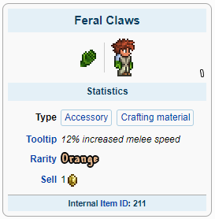
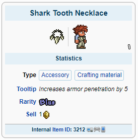
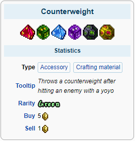
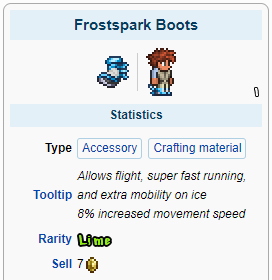
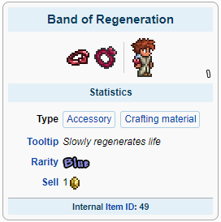
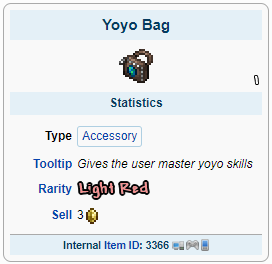
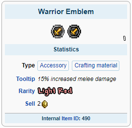
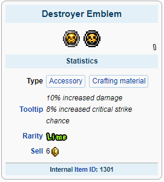
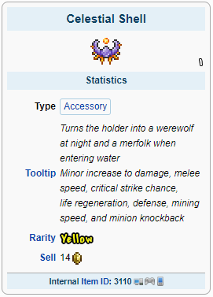
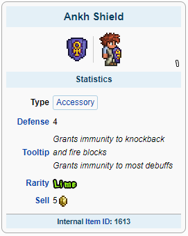

Armas Melee são usadas em combate de curto a médio alcance. Sua característica definidora é o fato de que eles não consomem munição ou mana quando usados. Eles são categorizados em espadas, lanças, mangais, bumerangues e Yoyos.
A classe Melee também é caracterizada pela alta quantidade de redução de dano através de armadura.
No início do jogo as melhores armas melee disponíveis são os yoyos com seu médio alcance e bom dano.
O yoyo Amazon e a armadura Molten possuem os melhores status disponíveis nesta fase do jogo:
Para acessórios é recomendado usar: Feral Claws, Shark Tooth Necklace, Yoyo Counterweight, Frostspark Boots e Band of Regeneration
    Com esses equipamentos você estará pronto para derrotar qualquer chefe Pré-Hardmode!
A preparação para a luta com o Wall of Flesh utilize armas com bom alcance
A Dark Lance e o Yoyo Cascade serão suas melhores escolhas:
Para acessórios a única alteração é a troca da Band of Regen pelo Obsidian Shield:
Agora você está pronto para derrotar chefe do submundo e libertar poderes antigos em seu mundo!
Após derrotar o Wall of Flesh magias poderosas serão libertadas em seu mundo, novos biomas, inimigos, chefes e esquipamentos estarão disponíveis para uso.
Com tudo liberado a armadura Solar Flare, Meowmere e o Yoyo Terrarian serão seus equipamentos:
No Hardmode vários acessórios poderosos estarão disponíveis, entre eles:
    Agora você está pronto para derrotar qualquer coisa que entrar em seu caminho!
Summoner MageRanger